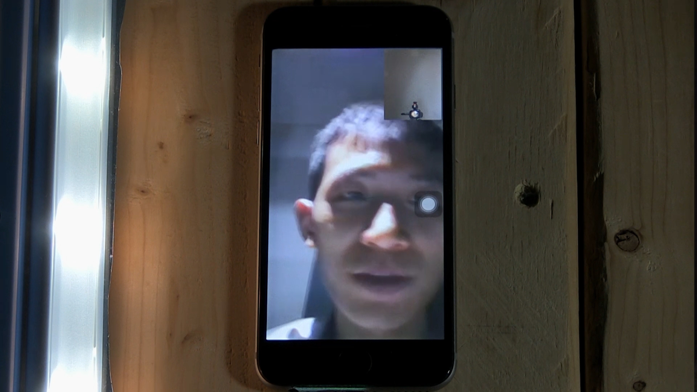
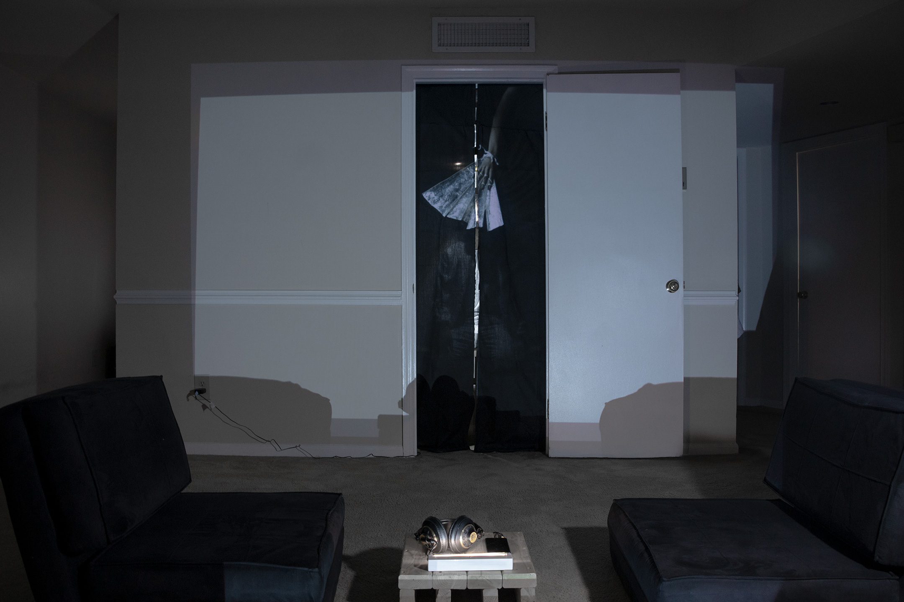
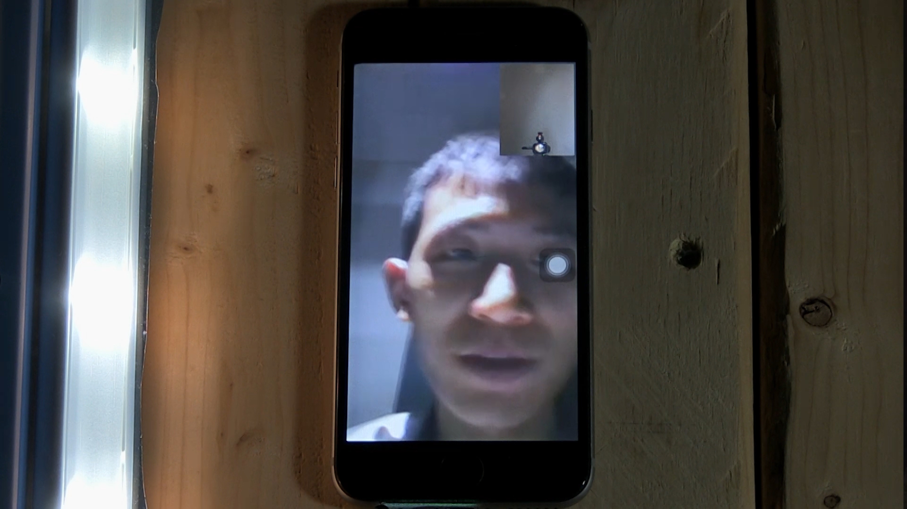
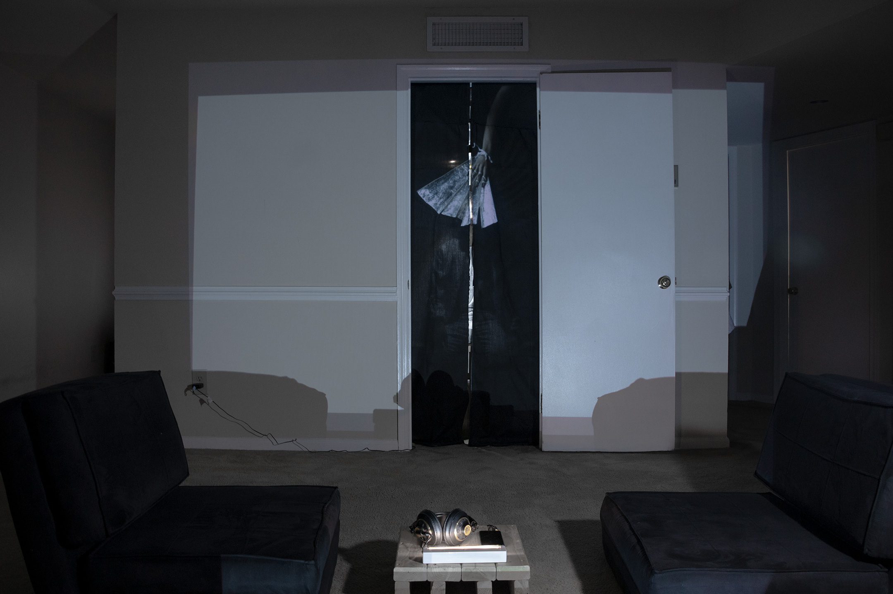
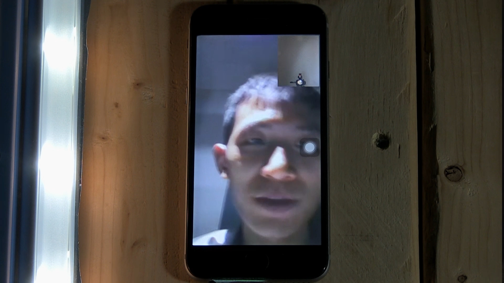
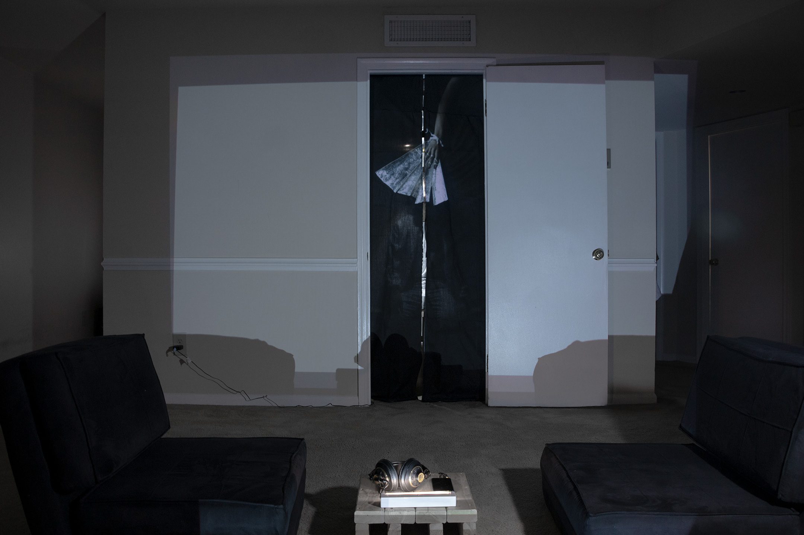
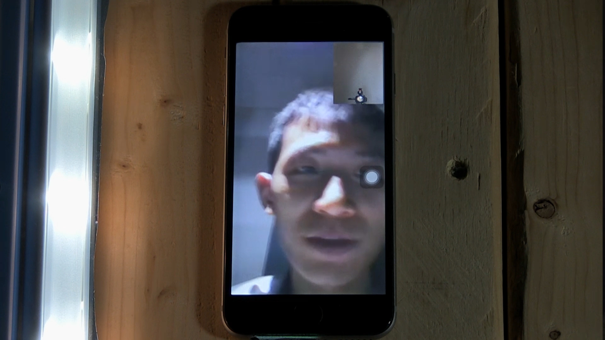
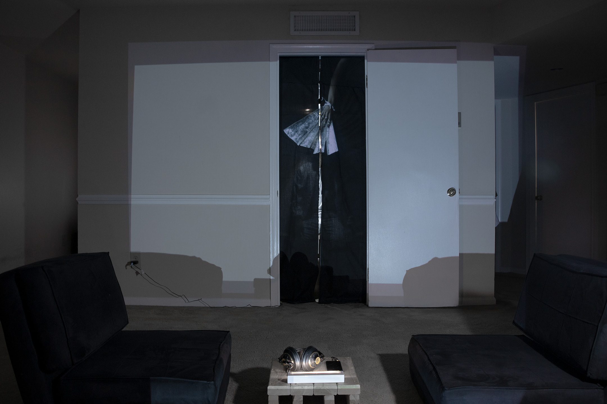

Fan Impromptu is a performace, recreating Samuel Beckett’s Ohio Impromptu with a 2-part installation.
The stage of Fan Impromptu is a cramped room allowing only one person to sit inside. The entrance of the room is covered by a thin black veil. A stop-motion video of a hand-wearable, folding fan is projected onto the veil at the position of my face when I sit inside. The viewers sit at some distance opposite the room. The text I read comes from Samuel Beckett’s short play Ohio Impromptu, with two characters, a listener and a reader.
1. The imagery fan as a character: The staccato folding and unfolding movement of the fan in the video syncs up with the staccato, short words and sound from the listener in the background audio.
2. A phone call as another: I sit behind the black veil and whisper out the reader’s lines into a phone, which is video-calling another phone at the viewers’ side. While my face is concealed by the veil and the moving fan, the viewer can see and hear me through the phone.
The surfaces of the moving fan and the black veil, with me behind them, create a laminated effect, while the performer beneath the laminated material is revealed and continues onto a phone held by one's hand.